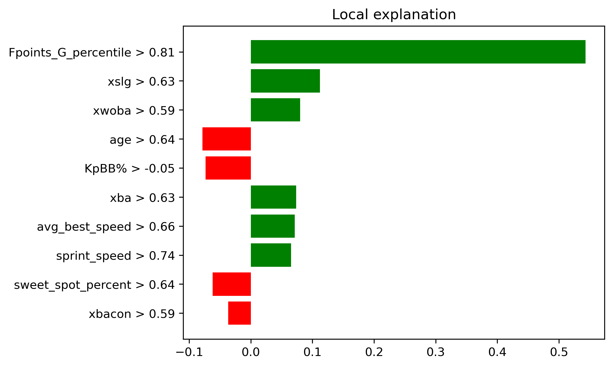

Outfield#
See outfield rankings here
For outfielders I will be providing two for each category.
Upper Echelon: Julio Rodriguez - SEA (My Rank: 24, ESPN 63)#
This one is pretty obvious if you have watched Julio play. He does strikeout a bit more and walk a bit less than you’d like, but he more than makes up for it at the ESPN rank he is given. Julio crushes baseball to the tune of a 95th percentile avg EV of 92.7, along with possesing 98th percentile bat speed at 77.2 MPH. His .734 OPS last season seems very mundane, however he really heated up in the second half at a .818 OPS. He will also provide you with some stolen bases, reaching at least 24 in each of the last three years. Although he has to contend with the awful hitters park that is T-Mobile Park, this could be the year where Julio truly breaks into the league elite.
Upper Echelon: James Wood - WSH (My Rank: 115, ESPN: 136)#
I’ll admit James Wood does profile a bit like Elly De La Cruz who I just labelled a bust. Wood turns the narrative however with an 11.6% BB rate, which is around the 90th percentile. He has insane pop as a 6’7 outfielder, and has tons of room to grow at only 22 years old. Wood was called up for 300 plate appearances in the second half last season and posted a .781 OPS with above average metrics nearly across the board. He did tease an improvement in strikeout prior to the call up posting an 1.82% K rate in AAA - albeit in only games. He struggles with putting the ball in the air (especially pulling flyballs) with only a 18.2 flyball % last season, but with even slight improvements here Wood can become elite. To add onto it all Wood stole 24 bases combined in AAA and the MLB. There is tantalizing upside here for a player who seems to have already set himself a fairly high floor.

Honorable Mention - Mike Trout - LAA (My Rank: 119, ESPN: 187)#
Not much to say here - if Trout stays healthy he can be a top 10 player. Odds are he doesn’t, but maybe this is the year??? 
Sleeper: Jorge Soler - LAA (My Rank: 131, ESPN: 231)#
I can’t believe I am talking about two Angels in a row here in positive manner. Sorry Angels fans.
The 2021 World Series MVP has quietly been a well above average hitter over the majority of the last 7 years - highlighted by a massive 48 home run season in 2019 (where he did also lead the league in strikeouts). The strikeout problem is apparent and so is his defence - but the power is still there. He posted a .780 OPS last season highlighted by an 86th percentile barrel rate and a 83rd percentile xwOBA - helped out by a 92nd percentile 11.8 BB%. He has bounced around over the past few seasons likely due to his inability to play in the outfield, but on an Angels roster with pretty limited options he could settle in nicely as the everyday DH. One can hope he gets traded to the Braves at the deadline for a third time where he boasts a 132 OPS+ throughout his two stints. Soler is a good upside swing at the end of the draft, who you won’t feel bad about dropping if things go poorly either.

Sleeper: Michael Conforto - LAD (My Rank: 212, ESPN: 334)#
Keep in mind here Conforto is likely to sit against left-handed pitching.
Conforto has had a weird last few seasons. He posted some huge seasons with the Mets prior to leaving in 2021, including a 159 OPS+ 2018. Then he missed the entire 2022 season and has come back down to earth a bit with the Giants, posting a 100 OPS+ in 2023 and 116 OPS+ in 2024. He is not amazing at any particular trait - posting about average strikeout and walk rates - however he does consistently but the ball in play hard. This is backed by his 80th percentile barrel % and 89th percentile xSLG in 2024. Conforto underperformed his estimators last season by slight margins of about 0.30 points for both SLG/xSLG and wOBA/xwOBA, indicating there is a bit more in the take here. Take into account a park and surrounding lineup boost moving from the Giants to the Dodgers, and we could be looking at some good value here in Conforto late in drafts.
Bust: Anthony Santander - TOR (My Rank: 70, ESPN: 27)#
The newest Toronto Blue Jay had an excellent season last year - hitting 44 home runs and eclipsing a 130 OPS+. It just seems extremely unlikely he replicates this again. Santander excels at pulling flyballs, especially from the left side of the plate, with a pull percentage of 43% and a FB% of 34% in 2024. Under the hood there is really nothing special about Santander - he has slightly above average strikeout (19.4%) and walk (8.7%) rates, while also only producing a 58th percentile xwOBA even with the aformentioned counting stats. His SLG of .506 was also a whopping 0.60 points higher than his xSLG, indicating Santander may be due for some power regression. I would easily fade Santander at his ESPN ranking - wait a couple more rounds before taking him.

Bust: Jazz Chisholm Jr. - NYY (My Rank: 142, ESPN: 106)#
The former cover athlete of MLB The Show has had a bit of a tumultuous career. He has been expected to break out seemingly every season - but has never truly taken that leap. The main culprit on the offensive side is his inability to hit breaking balls - Chisholm posted a lowly .365 SLG and an even lower .238 xwOBA against breakers last season. He is also prone to the swing and miss with a 24.5% K rate and 29.3% whiff rate in 2024. He did improve after being traded to the Yankees - up to a 130 OPS+ during his 46 game stint in the Bronx - and the presence of the short porch in right will definitely benefit Chisholm. His only truly above average offensive skill is his ability to steal bases (40 last season), as many of his contact metrics are middle of the pack. Chisholm is a very entertaining player to watch, but it may be more enjoying without him on your fantasy team.